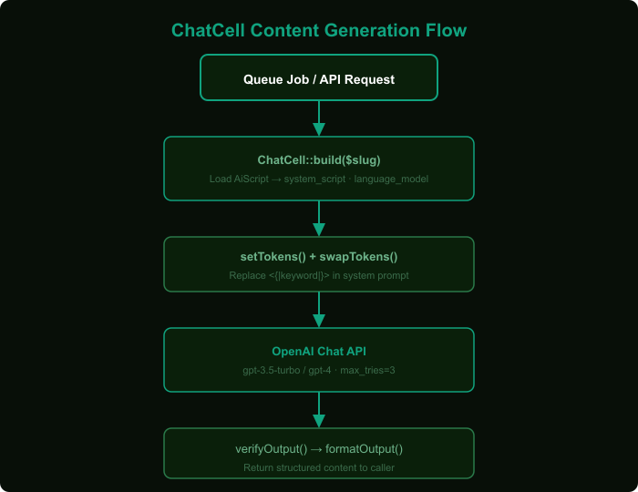

Insights<!-- POST CONTENT START --> markerssearcheye-logo.png → replace src="searcheye-logo.png" with WordPress URLsearcheye-openai-content-generation-laravel-flow-diagram.png → replace src="searcheye-openai-content-generation-laravel-flow-diagram.png" with WordPress URLsearcheye-openai-content-generation-laravel-thumbnail.png → set as Featured Image| Title | OpenAI + ChatCells: Database-Driven Content Generation in Laravel |
| Slug | searcheye-openai-content-generation-laravel |
| Focus Keyword | OpenAI content generation Laravel |
| Meta Description | How SearchEye built a composable AI content generation system using OpenAI's Chat API in Laravel — with database-stored prompts, token substitution, and automatic retry logic. |
| Excerpt | We built ChatCells — a database-driven abstraction over OpenAI — so non-engineers can swap prompts and models without deployments. |
| Category | Insights |
| Tags | OpenAI, Laravel, PHP, AI, GPT-4, Content Generation, SaaS, ChatGPT |
| File | Size | Alt Text |
|---|---|---|
searcheye-logo.png | auto × 48px | SearchEye logo |
searcheye-openai-content-generation-laravel-thumbnail.png | 1200 × 628 px | OpenAI content generation Laravel cover image |
searcheye-openai-content-generation-laravel-flow-diagram.png | ~700 px wide | ChatCell content generation flow diagram |
ChatCell class defines run(), callAPI(), swapTokens(), verifyOutput(), and formatOutput(). Subclasses override buildConversation() and getTokenDefinitions(). System prompts are stored in the ai_scripts DB table (loaded by slug). Token placeholders use the format <{|keyword|}>. The system retries up to max_tries = 3. Models are configured per AiScript record — operators can switch gpt-3.5-turbo to gpt-4 in the database without code changes.How SearchEye built a composable AI pipeline where system prompts, model selection, and token substitution are all controlled from a database — no deployments needed to update AI behaviour.
SearchEye generates SEO content as part of backlink order fulfilment — article outlines, content briefs, and keyword-optimised descriptions. Early prototypes hardcoded prompts and model names into PHP classes. Every prompt change required a pull request, a review, and a deployment.
As the product matured we needed:
gpt-3.5-turbo for gpt-4 per use-case without refactoringWe built ChatCells — an abstract base class that wraps OpenAI's Chat Completions API. Each concrete ChatCell subclass defines what kind of content it generates; everything else (prompt loading, token substitution, API call, retry logic) is inherited.
System prompts are stored in the ai_scripts database table, keyed by a slug that matches const slug on the ChatCell class. This means an operator can update the prompt, switch the model, or change the response format in the database — the PHP code stays unchanged.

The run() method orchestrates validation, API call, output verification, and retry — all in one place. Subclasses only override the parts specific to their use-case.
// app/ChatCells/ChatCell.php
abstract class ChatCell
{
protected $language_model = "gpt-3.5-turbo";
const max_tries = 3;
const slug = 'chat-cell-base';
public function __construct(
array|null $tokens = null,
array|null $options = null,
array|null $history = null
) {
$this->loadScriptConfiguration(); // load prompt from DB
$this->setOptions($this->getDefaultOptions(), true);
if ($options) $this->setOptions($options);
if ($tokens) $this->setTokens($tokens);
if ($history) $this->setHistory($history);
$this->ai = new OpenAIService();
}
public function run(int $current_try = 1): mixed
{
$result = $this->callAPI();
if (isset($result->choices) && !empty($result->choices)) {
if ($this->verifyOutput($this->history, $result->choices)) {
return $this->formatOutput($this->history, $result->choices);
}
}
if ($current_try === static::max_tries) {
return $this->getFailureOutput($this->history, $result->choices ?? []);
}
return $this->run($current_try + 1);
}
}Prompts contain placeholders in the format <{|keyword|}>. Callers inject runtime values using setTokens(); the swapTokens() method replaces all placeholders in the conversation history before the API call.
protected function swapTokens(): self
{
foreach ($this->history as $index => $item) {
foreach ($this->tokens as $key => $value) {
if (is_array($value)) {
$value = implode(', ', $value);
}
$item['content'] = str_replace(
'<{|' . $key . '|}>',
$value,
$item['content']
);
}
$this->history[$index]['content'] = $item['content'];
}
return $this;
}For example, a system prompt might contain <{|target_keyword|}> and <{|domain_name|}>. The calling job sets these from the order record — the prompt template itself never changes.
protected function loadScriptConfiguration()
{
$this->scriptConfiguration = AiScript::where('slug', static::slug)->first();
if ($this->scriptConfiguration) {
$this->title = $this->scriptConfiguration['title'];
$this->language_model = $this->scriptConfiguration['language_model'];
$this->response_type = $this->scriptConfiguration['response_type'];
$this->user_script = $this->scriptConfiguration['user_script'];
return $this->scriptConfiguration['system_script'];
}
return null;
}The ai_scripts table stores system_script, language_model, response_type, and response_format per slug. Changing a model from gpt-3.5-turbo to gpt-4 is a one-row database update.
A concrete cell only needs to implement buildConversation() and getTokenDefinitions(). The base class handles everything else.
// Example concrete cell
class ContentBriefCell extends ChatCell
{
const slug = 'content-brief';
const link_text = 'Content Brief';
protected static function getTokenDefinitions(): array
{
return [
'target_keyword' => ['rules' => 'required|string', 'type' => 'text'],
'word_count' => ['rules' => 'required|integer', 'type' => 'number'],
'domain_name' => ['rules' => 'nullable|string', 'type' => 'text'],
];
}
protected function buildConversation(): array
{
return [
['role' => 'system', 'content' => $this->loadScriptConfiguration()],
['role' => 'user', 'content' => 'Generate a brief for <{|target_keyword|}> targeting <{|word_count|}> words.'],
];
}
protected function formatOutput(array $input, array $output): mixed
{
return $output[0]->message->content ?? null;
}
}gpt-3.5-turbo → gpt-4) happen per cell with a DB update, no code changeValidator catches missing required inputs early, before any API cost is incurredNeed a maintainable AI content pipeline in your Laravel product?
Talk to us about your project →